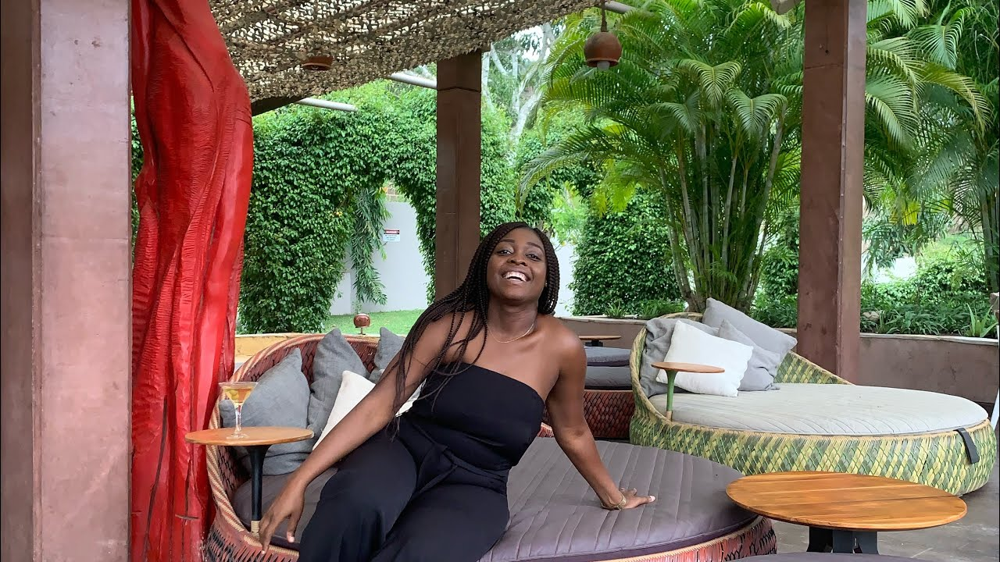

Our restaurant's menu is a symphony of flavors, carefully crafted to cater to a wide range of tastes and preferences

From appetizers that tantalize the taste buds to delectable main courses and mouthwatering desserts, our menu is a gastronomic journey that aims to delight and surprise.
One of the cornerstones of our menu is diversity. We understand that every customer who walks through our doors brings their unique palate and culinary preferences. Thus, our menu is thoughtfully curated to offer a broad spectrum of options, ranging from international and fusion dishes to classic local favorites. Vegetarian, vegan, and gluten-free choices are also available, ensuring that every guest can find something to satisfy their appetite.Our commitment to culinary excellence is evident in the sourcing of our ingredients
We prioritize fresh, locally-sourced produce and ingredients whenever possible.Our culinary team is composed of passionate and skilled chefs who take pride in creating dishes that not only taste exceptional but also showcase artistic presentation.The menu is not just a list of dishes; it's a journey. We offer an array of culinary experiences, from the comfort of timeless classics to the excitement of innovative, seasonal offerings. Our commitment to seasonal ingredients means our menu evolves, allowing us to present new and exciting flavors to our customers throughout the year.
Furthermore, our menu is a testament to our dedication to sustainability and responsible dining. We emphasize the use of eco-friendly practices, reducing food waste, and promoting sustainable choice aligning with the modern diner's desire for conscious eating. In conclusion, our restaurant's menu is a reflection of our culinary philosophy: to offer an exceptional dining experience that is as diverse as it is delicious. It embodies our commitment to quality, diversity, sustainability, and culinary innovation. Our menu is more than a list of dishes; it's a promise to our customers that every visit to our restaurant will be a memorable journey of taste, a celebration of culinary artistry, and a testament to our dedication to culinary excellence.